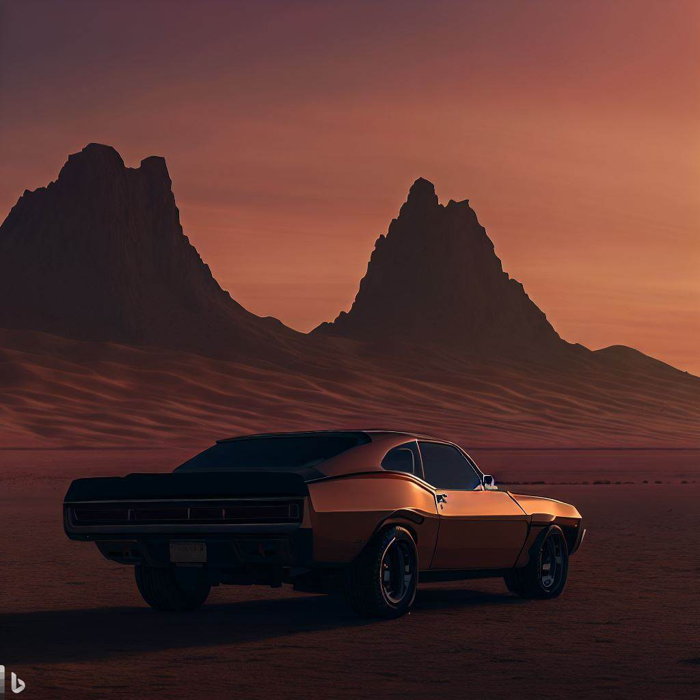
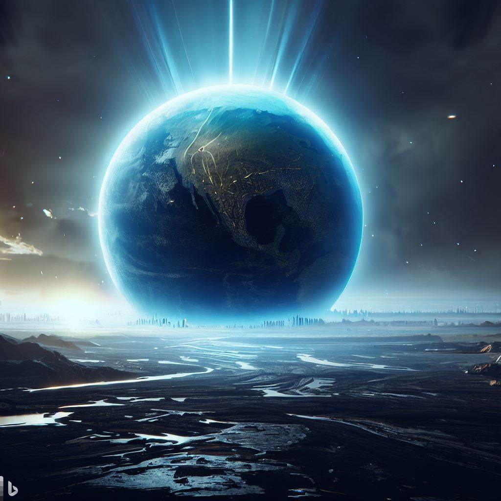
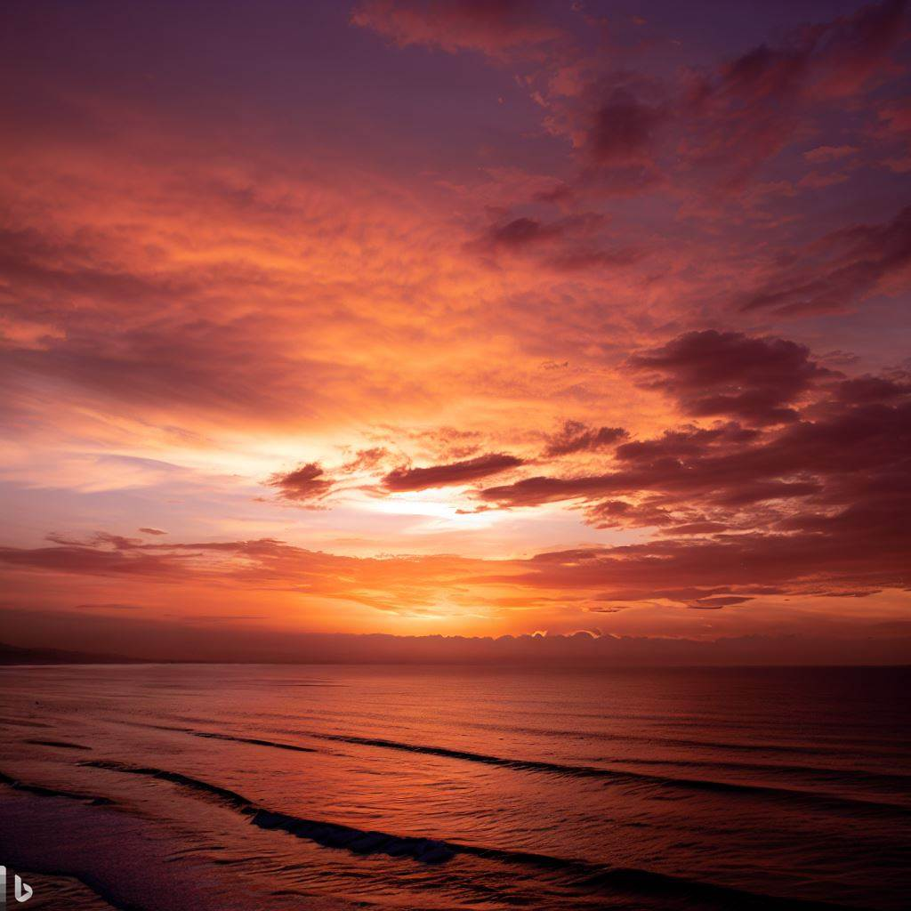

Imagem 1
Prompt - Salpicos coloridos de tinta, geométrica, arte abstrata

Imagem 2
Prompt - muscle car no deserto ao lado de duas montanhas no por do sol

Imagem 3
Prompt - A terra no ano de 2080

Imagem 4
Por do sol Taken with Canon EOS R5, sensor CMOS full-frame, 45 megapixels, 8k resolution, Canon RF 24-70mm f/2.8L IS USM lens, 24mm, f/2.8, abertura f/1.8 ou f/2 e velocidade do obturador de 1/100, ISO 400, foco manual"